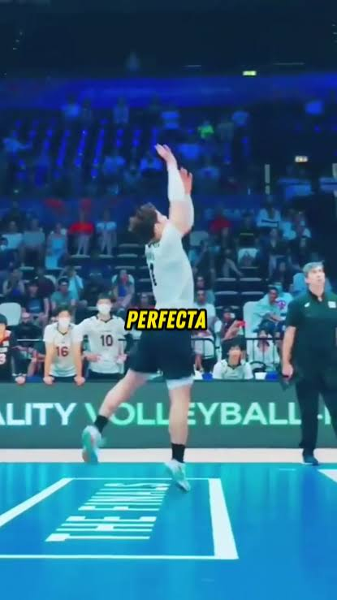
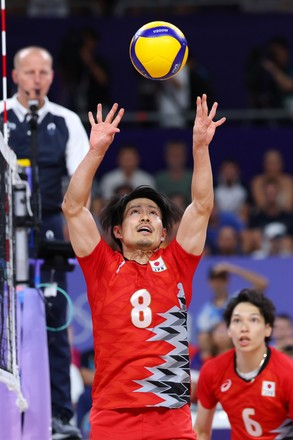
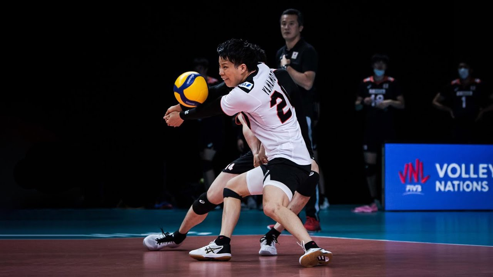
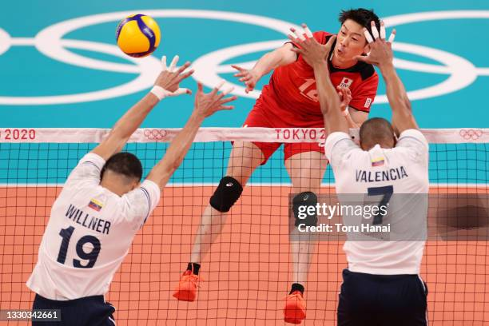
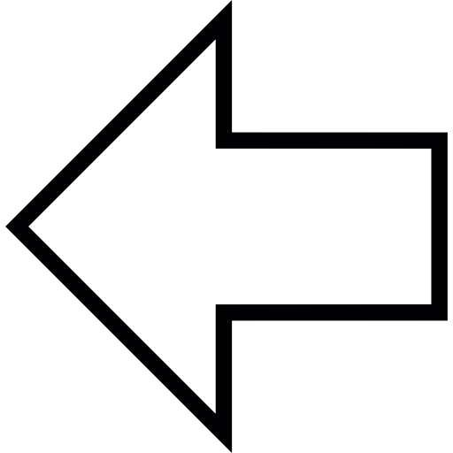
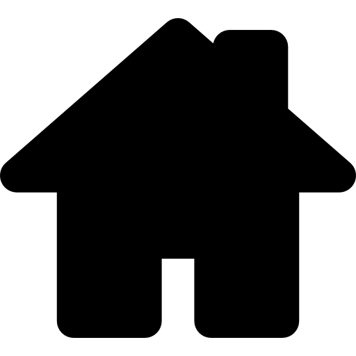
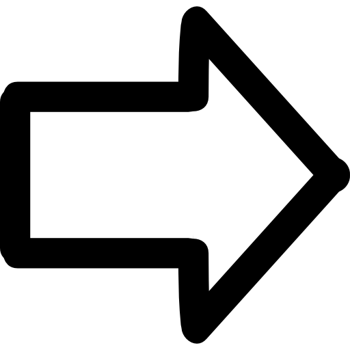

Fundamentos Básicos
Técnicas del Juego
-
El Saque: El saque o servicio en el voleibol es la acción técnica con la que se pone el balón en juego y se inicia cada punto. Se realiza desde la zona de saque, ubicada detrás de la línea de fondo de la cancha, y el jugador dispone de 8 segundos para ejecutarlo una vez que el árbitro pita.

-
El Voleo (pase de dedos): acción técnica fundamental en el voleibol que consiste en golpear el balón de forma limpia con las yemas de los dedos de ambas manos.

-
El Antebrazo: acción técnica defensiva clave en el voleibol que consiste en golpear el balón de manera limpia utilizando la parte interna de ambos antebrazos.

-
El Remate: acción técnica cumbre e hiperofensiva del voleibol que consiste en golpear el balón con fuerza y de forma descendente hacia la cancha contraria, buscando que toque el suelo o sea imposible de defender para el rival.

-
El Bloqueo: acción técnica defensiva del voleibol que consiste en interceptar el paso del balón enviado por el atacante rival, saltando junto a la red con los brazos extendidos hacia arriba.



